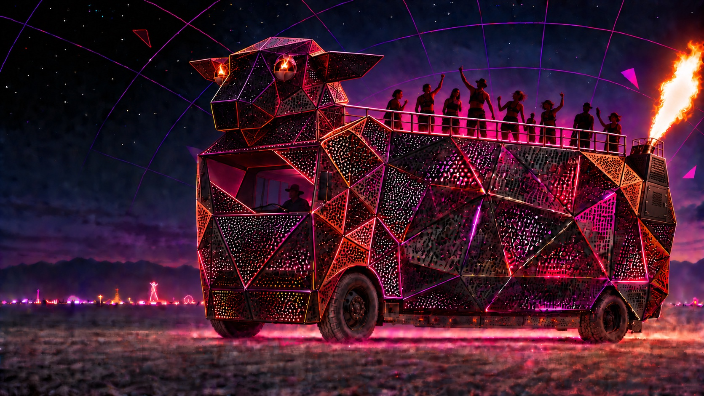

Seattle, Washington · Bound for Black Rock City
Where even black sheep belong.
A beacon outside the flock
Inspired by BAAAHS, powered by wry humor, and driven by an entirely reasonable need to make fire.
BAAABS—the Bad Ass Amazingly Awesome Black Sheep—is my lighthouse for misfits and outcasts.
She is a towering, fire-eyed black sheep with a rooftop dance floor, built in Seattle and bound for Burning Man.
She is my queer joy made gloriously impossible to ignore—and a beacon for anyone who has ever found more freedom outside the flock than within it.
What is BAAABS?
A very large expression of queer joy.
BAAABS is a monumental mobile artwork: a faceted black sheep built from steel, lit from within, and carried on the bones of a school bus.
She has fire in her eyes, a dance floor on her back, and—if all goes according to plan—one spectacularly inappropriate flame effect at the other end.
I’m building her because I want her to exist. Because queer joy doesn’t need a business case, a community mission, or anyone else’s permission. Sometimes friends may climb aboard. Sometimes it may be just me. Either way, the sheep rolls on.
A faceted, perforated skin wrapped around a working bus.
Violet and hot-pink light escaping through every opening.
Contained pilot flames with a little menace and a lot of charm.
A full-roof dance floor made for trouble beneath the stars.
The lineage
Inspired by BAAAHS.
Built to be herself.
BAAABS carries forward BAAAHS’s faceted silhouette, rooftop revelry, and gift for beautiful trouble. She takes that spark in her own direction: more compact, wrapped in black perforated steel, and glowing from the inside out.
Family resemblance. Her own fire.
From school bus to showgirl
The transformation
One practical layer at a time, a bus becomes a black sheep built to survive dust, dancing, and terrible ideas executed well.
-
01
Bones
A roadworthy bus and welded steel structure give the sheep her stance, strength, and unmistakable silhouette.
-
02
Skin
Black perforated panels turn the frame into a shifting field of facets—solid by day, porous after dark.
-
03
Spark
Light pours through the steel. Fire animates her face. The rooftop becomes a dance floor beneath the open sky.
-
04
Voice
A properly engineered sound system completes the transformation and gives BAAABS a voice worthy of the outfit.
The reason
I want her to exist.
For now, it’s enough to build one gloriously improbable black sheep and set my own queer joy loose in the world.
Where even black sheep belong.